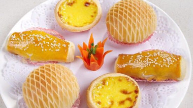
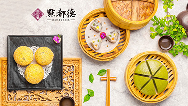
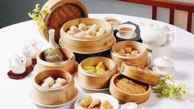
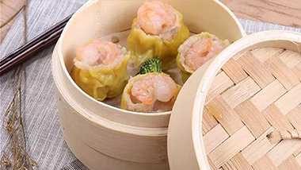

12/三月
为名忙，为利忙，忙里偷闲，且饮杯茶去
首先解释一下，此“饮茶”并非传统书面意思解作品茗、喝茶在广东说饮茶，是指上茶楼，叹一盅两件。比起享受茶香，更令以会吃著称的广东人喜欢上「饮茶」的，是那些垂涎欲滴的精致点心。茶香飘逸，点心精致。

09/四月
「没有什么事，是饮一餐茶解决不了的」
老广们把饮茶，又称「叹茶」。“叹”是广州的俗语，为享受之意。可见早茶时光有滋有味，还有一份优哉游哉的闲情。 粤式早茶味美，在欧美，都能找到不少吃“Dim Sum”（点心）、“ Yum Cha”（饮茶）的地方。

26/八月
最简单的点心——叉烧包，平凡而又不平凡。
软萌白胖的外皮包裹着浓郁的五花肉，这便是广东早茶届的「四大天王」之一的叉烧包。正宗的叉烧包，做出来肉鲜多汁，外皮厚度适中，松软不粘牙，吃过的人都会把持不住再来一个。包身软熟、叉烧甘香、带点酱汁，确认过眼神，这便是一个优秀的叉烧包。

31/六月
广东人饮茶的美妙体验，从来不赶时间
如梁文道先生说 「饮茶」首先应该是 一种时间的概念。 广东人饮茶的美妙体验 从来不赶时间。在路上遇见老朋友，急忙中还会言不由衷地，说一句「得闲饮茶」，意思就是，大家都很忙，有空再一起去茶楼花时间